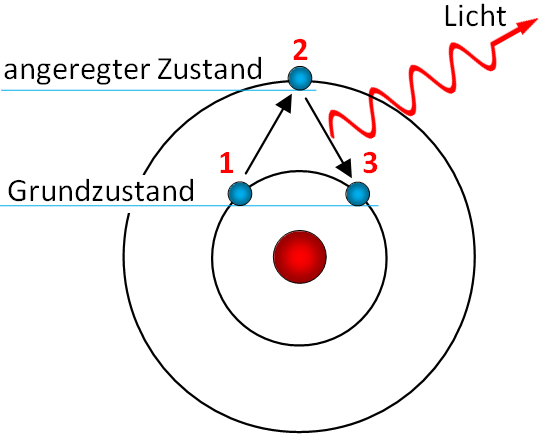
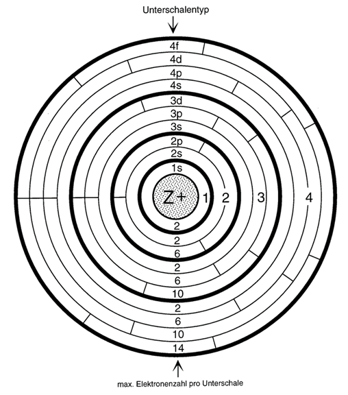
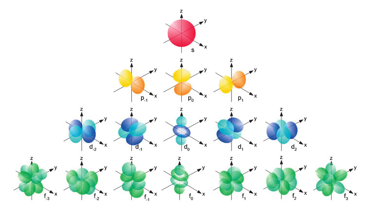
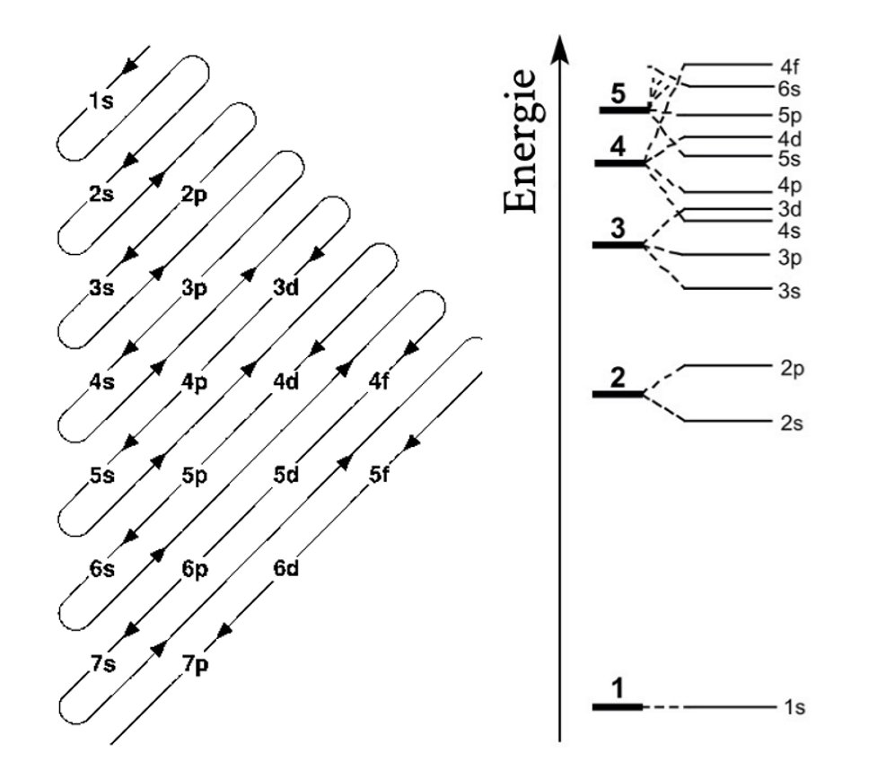
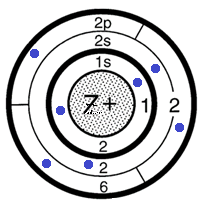

Die Elektronenhülle verstehen
Vom Schalenmodell über Orbitale bis zur Elektronenkonfiguration
Aufbau der Elektronenhülle
Lernziele
- Sie können erklären, warum das Rutherford-Modell für die Beschreibung der Elektronenhülle nicht ausreicht.
- Sie können die zentrale Idee des Bohr-Modells in eigenen Worten beschreiben: Elektronen bewegen sich auf bestimmten Bahnen mit fester Energie.
- Sie können den Begriff «Ionisierungsenergie» definieren und aus einem IE-Diagramm Rückschlüsse auf den Schalenbau ziehen.
- Sie können die Hauptschalen K, L, M, N benennen und deren maximale Elektronenzahl angeben.
4.1 Das Problem mit Rutherford
Am Ende von Phase 1 haben wir das Kern-Hülle-Modell von Rutherford kennengelernt: Ein winziger, positiver Kern wird von Elektronen in einer grossen, fast leeren Hülle umkreist. Doch dieses Modell hat ein schwerwiegendes Problem:
Nach den Gesetzen der klassischen Physik müssten die kreisenden Elektronen ständig Energie abstrahlen und dabei immer langsamer werden — wie ein Satellit, der in die Atmosphäre eintritt. Die Konsequenz: Die Elektronen müssten auf einer Spiralbahn in den Kern stürzen. Das Atom wäre in Bruchteilen einer Sekunde zusammengestürzt. Offensichtlich passiert das nicht — sonst gäbe es keine Materie!
Wie sind also die Elektronen in der Hülle verteilt? Und warum stürzen sie nicht in den Kern?
4.2 Ionisierungsenergien verraten den Aufbau der Atomhülle
Wie können wir herausfinden, wie die Elektronen in der Hülle angeordnet sind? Die Antwort liefern Ionisierungsenergien.
Die Energie, die benötigt wird, um ein Elektron aus der Hülle eines Atoms zu entfernen. Je näher das Elektron am Kern liegt, desto grösser ist die benötigte Energie.
Betrachten Sie die folgende Tabelle: Sie zeigt die 13 Ionisierungsenergien von Aluminium (für 6·10²³ Atome). Das 1. Elektron ist am leichtesten zu entfernen, das 13. am schwersten.
| Elektron | 1. | 2. | 3. | 4. | 5. | 6. | 7. | 8. | 9. | 10. | 11. | 12. | 13. |
|---|---|---|---|---|---|---|---|---|---|---|---|---|---|
| IE [MJ] | 0.6 | 1.8 | 2.8 | 11.6 | 14.9 | 18.4 | 23.3 | 27.5 | 31.7 | 38.5 | 42.7 | 201 | 222 |
a) Zeichnen Sie ein Balkendiagramm der Ionisierungsenergien (x-Achse: Elektronen 1–13, y-Achse: Energie in MJ).
b) Was fällt Ihnen an den Sprüngen im Diagramm auf?
c) Wie würde das Diagramm aussehen, wenn das Rutherford-Modell vollständig richtig wäre (d.h. alle Elektronen gleichmässig um den Kern verteilt)?
d) Wie kommen die Sprünge im Atom zustande? (Denken Sie an das Coulomb-Gesetz.)
📝 Für diese Aufgabe finden Sie in Ihrem persönlichen Bereich auf OneNote eine vorbereitete Seite mit dem Diagramm-Raster (Klassennotizbuch GKG_Ch_2029_E → 4 Atombau – Aufgaben Atombau).
4.3 Niels Bohrs geniale Idee
Der dänische Physiker Niels Bohr (1885–1962) löste dieses Problem 1913 mit einer damals geradezu revolutionären Annahme:
Elektronen bewegen sich ohne Energieverlust auf ganz bestimmten Bahnen um den Kern. Jede Bahn entspricht einem bestimmten Energieniveau. Die Energie eines Elektrons steigt mit zunehmendem Abstand zum Kern.
Die entscheidende Besonderheit: Beim Wechsel von einer Bahn zur anderen ändert sich die Energie des Elektrons sprunghaft — es gibt keine Zwischenwerte. Man spricht von Quantensprüngen. Das ist, als ob Sie eine Treppe hinaufsteigen: Sie können auf Stufe 1 oder Stufe 2 stehen, aber nicht dazwischen schweben.
Ein klar definierter Energiewert, den ein Elektron auf einer bestimmten Bahn besitzt. Zwischen den Niveaus gibt es keine erlaubten Zustände.
Der sprunghafte Wechsel eines Elektrons von einem Energieniveau zu einem anderen. Dabei wird Energie in Form von elektromagnetischer Strahlung aufgenommen oder abgegeben — ohne Durchlaufen von Zwischenwerten.
Veranschaulichung: Energieniveaus und Quantensprünge
Die folgende Darstellung zeigt das Bohr-Modell schematisch: Elektronen befinden sich auf festen Schalen (Energieniveaus). Durch Energiezufuhr können sie auf höhere Schalen springen — und beim Zurückfallen Licht aussenden.

Schritt 1: Elektron absorbiert Energie und springt auf höhere Schale (angeregter Zustand). Schritt 2: Instabiler Zustand. Schritt 3: Elektron fällt zurück und sendet Licht aus.
4.4 Das Schalenmodell
Die Elektronen ordnen sich in der Atomhülle in konzentrischen Schalen um den Kern an. Jede Schale hat eine bestimmte Nummer und einen Buchstaben:
| Hauptschale | Buchstabe | Max. Elektronen |
|---|---|---|
| 1. Hauptschale | K | 2 |
| 2. Hauptschale | L | 8 |
| 3. Hauptschale | M | 18 |
| 4. Hauptschale | N | 32 |
Die maximale Elektronenzahl pro Hauptschale berechnet sich mit der Formel: 2n² (wobei n die Schalennummer ist). Also: 2·1² = 2, 2·2² = 8, 2·3² = 18, 2·4² = 32.
Die Besetzung erfolgt von innen nach aussen: Zuerst wird die K-Schale gefüllt, dann die L-Schale, dann die M-Schale. Dabei gilt für die ersten 20 Elemente eine wichtige Regel: In der äussersten Schale befinden sich maximal 8 Elektronen.
Aufgaben zu Lektion 4
Das Orbitalmodell
Lernziele
- Sie können erklären, warum das Schalenmodell (Bohr) nicht alle Beobachtungen erklären kann und weiterentwickelt werden muss.
- Sie können den Unterschied zwischen einer «Bahn» (Bohr) und einem «Orbital» (Aufenthaltswahrscheinlichkeit) beschreiben.
- Sie können die Unterschalen s, p und d benennen und die Form der zugehörigen Orbitale skizzieren.
- Sie können das Pauli-Prinzip und den Elektronenspin in eigenen Worten erklären.
5.1 Warum reichen Schalen nicht?
Das Bohr-Modell war ein gewaltiger Fortschritt und beschrieb das Wasserstoffatom hervorragend. Doch bei Atomen mit mehreren Elektronen zeigten sich Probleme: Wenn man das Licht analysiert, das angeregte Atome aussenden, sieht man schmale farbige Linien — sogenannte Spektrallinien. Jedes Element hat ein einzigartiges Muster solcher Linien (wie ein «Fingerabdruck»). Bei genauerer Untersuchung zeigte sich, dass diese Linien feiner aufgespalten waren, als Bohrs Modell vorhersagte. Es musste also noch eine Feinstruktur innerhalb der Schalen geben.
Zudem konnte der deutsche Physiker Werner Heisenberg in den 1920er-Jahren zeigen, dass es grundsätzlich unmöglich ist, den genauen Ort und die Geschwindigkeit eines Elektrons gleichzeitig exakt zu bestimmen. Es gibt also keine festen Bahnen — nur Aufenthaltswahrscheinlichkeiten.
Ort und Geschwindigkeit eines Elektrons können nicht gleichzeitig genau bestimmt werden. Statt Bahnen beschreiben wir daher nur die Wahrscheinlichkeit, ein Elektron an einem bestimmten Ort anzutreffen.
5.2 Von der Schale zur Unterschale mit Orbitalen
Im modernen Atommodell sprechen wir nicht mehr von «Bahnen», sondern von Orbitalen. Ein Orbital ist der Raum, in dem sich ein Elektron mit einer bestimmten Wahrscheinlichkeit (typischerweise 90%) aufhält.
Der räumliche Bereich um den Atomkern, in dem sich ein Elektron mit hoher Wahrscheinlichkeit aufhält. Jedes Orbital kann maximal 2 Elektronen aufnehmen.
Die Hauptschalen bestehen aus Unterschalen, die mit den Buchstaben s, p, d und f bezeichnet werden. Jede Unterschale enthält eine bestimmte Anzahl Orbitale:
| Unterschale | Anzahl Orbitale | Max. Elektronen | Form |
|---|---|---|---|
| s | 1 | 2 | Kugel |
| p | 3 | 6 | Hantel (entlang x, y, z) |
| d | 5 | 10 | Komplexere Formen |
| f | 7 | 14 | Komplexere Formen (wird im GLF nicht behandelt) |
Die Hauptschalen enthalten unterschiedlich viele Unterschalen:
- 1. Hauptschale (K): nur 1s → 2 Elektronen
- 2. Hauptschale (L): 2s + 2p → 2 + 6 = 8 Elektronen
- 3. Hauptschale (M): 3s + 3p + 3d → 2 + 6 + 10 = 18 Elektronen
- 4. Hauptschale (N): 4s + 4p + 4d + 4f → 2 + 6 + 10 + 14 = 32 Elektronen
Jetzt verstehen wir, woher die Formel 2n² kommt!

Das Schalenmodell mit Haupt- und Unterschalen. Die Zahlen unten geben die maximale Elektronenzahl pro Unterschale an.
5.3 Die Formen der Orbitale
Jede Unterschale hat eine charakteristische räumliche Form:
s-Orbital
Kugelförmig um den Kern. 1 Orbital pro Unterschale.
p-Orbital
Hantelförmig. 3 Orbitale (px, py, pz), je entlang einer Achse.
d-Orbital
Komplexere Formen (z.B. Kleeblatt). 5 Orbitale pro Unterschale.
Die folgende Abbildung zeigt die Orbitalformen der s-, p-, d- und f-Orbitale des Wasserstoff-Atoms entlang der drei Raumachsen:

Aufgaben zu Lektion 5
Auffüllregeln und Elektronenkonfiguration
Lernziele
- Sie können das Aufbauprinzip anwenden: Orbitale werden in der Reihenfolge steigender Energie besetzt.
- Sie können die Hund'sche Regel und das Pauli-Prinzip bei der Besetzung von Orbitalen korrekt anwenden.
- Sie können die Elektronenkonfiguration eines Atoms in drei Darstellungen notieren: Schalendarstellung, Kästchenschreibweise, Symboldarstellung.
- Sie können das Auffüllschema (Diagonalregel) als Werkzeug einsetzen.
6.1 In welcher Reihenfolge werden Orbitale gefüllt?
Im Grundzustand eines Atoms besetzen die Elektronen die Orbitale mit der niedrigsten Energie zuerst. Das klingt einfach, hat aber eine Überraschung: Die Energieniveaus der Unterschalen verschiedener Hauptschalen können sich überlappen. So liegt z.B. das 4s-Orbital energetisch tiefer als das 3d-Orbital — und wird daher zuerst besetzt!
Das Auffüllschema (Diagonalregel)
Um die Reihenfolge nicht auswendig lernen zu müssen, gibt es ein visuelles Werkzeug: das Auffüllschema. Schreiben Sie die Unterschalen in Zeilen und lesen Sie die diagonalen Pfeile von oben nach unten ab:

Links: Auffüllschema (Diagonalregel) — folgen Sie den Pfeilen von oben nach unten. Rechts: Energieniveau-Diagramm mit der Auffüllreihenfolge.
Die Orbitale werden in der Reihenfolge steigender Energie besetzt: 1s → 2s → 2p → 3s → 3p → 4s → 3d → 4p → 5s → … Beachten Sie: Das 4s-Orbital wird vor dem 3d-Orbital besetzt!
6.2 Die Hund'sche Regel
Wenn mehrere Orbitale einer Unterschale die gleiche Energie haben (z.B. die drei p-Orbitale), werden sie zuerst einzeln besetzt, bevor ein zweites Elektron hinzukommt. Der Grund: Elektronen stossen sich gegenseitig ab und verteilen sich daher möglichst gleichmässig.
Energetisch gleichwertige Orbitale (z.B. die drei 2p-Orbitale) werden zuerst einfach und mit parallelem Spin besetzt, bevor eine Doppelbesetzung beginnt.
6.3 Der Elektronenspin und das Pauli-Prinzip
Ein Orbital kann maximal zwei Elektronen aufnehmen. Aber wie vertragen sich zwei negativ geladene Teilchen auf so engem Raum? Die Antwort: Sie rotieren in entgegengesetzter Richtung — man spricht vom Elektronenspin.
In einem Orbital befinden sich maximal zwei Elektronen, und diese müssen entgegengesetzten Spin haben. Man stellt sie als ↑ und ↓ dar.
In der Kästchenschreibweise stellen wir jedes Orbital als Kästchen dar. Ein Elektron mit Spin «aufwärts» wird als ↑ gezeichnet, eines mit Spin «abwärts» als ↓. Ein voll besetztes Orbital zeigt ↑↓.
6.4 Drei Darstellungsmethoden
Die Elektronenkonfiguration eines Atoms kann auf drei Arten dargestellt werden. Wir zeigen sie am Beispiel von Stickstoff (N, Z = 7):
| Methode | Beispiel: Stickstoff (N) |
|---|---|
| Schalendarstellung Elektronen als Punkte auf Schalenkreisen |
 K: 2 e⁻ · L: 5 e⁻
|
| Kästchenschreibweise Kästchen = Orbital, Pfeile = Elektronen mit Spin |
1s
↑↓
2s
↑↓
2p
↑
↑
↑
Beachten Sie: Die drei 2p-Orbitale sind je einfach besetzt (Hund'sche Regel).
|
| Symboldarstellung Kurzschreibweise mit Hochzahlen |
1s² 2s² 2p³ |
In der Symbolschreibweise werden die Orbitale nach aufsteigendem Abstand vom Kern (also nach Schalennummer) aufgelistet — nicht nach der Auffüllreihenfolge. Die Auffüllreihenfolge bestimmt, in welcher Reihenfolge die Elektronen eingefüllt werden (z. B. 4s vor 3d). In der Symbolschreibweise ordnen wir anschliessend nach Schalen:
Beispiel Vanadium (V, Z = 23):
Auffüllreihenfolge: 1s² 2s² 2p⁶ 3s² 3p⁶ 4s² 3d³
Symbolschreibweise: 1s² 2s² 2p⁶ 3s² 3p⁶ 3d³ 4s²
Interaktiver Trainer: Kästchenschreibweise
Klicken Sie auf die Kästchen, um Elektronen einzufüllen. Erster Klick = ↑ (Spin aufwärts), zweiter Klick = ↑↓ (Spin abwärts hinzu), dritter Klick = leer.
Aufgaben zu Lektion 6
Flammenfärbung
Lernziele
- Sie können erklären, warum bestimmte Salze die Flamme färben — mit den Begriffen «angeregter Zustand», «Grundzustand» und «Energieniveau».
- Sie können den Zusammenhang zwischen Elektronenübergängen und der Wellenlänge des emittierten Lichts beschreiben.
- Sie können das Experiment der Flammenfärbung korrekt durchführen und protokollieren.
- Sie können erklären, warum die Flammenfärbung als Nachweismethode für Metalle eingesetzt werden kann.
7.1 Wenn Atome leuchten
Wenn Salze in die Flamme eines Bunsenbrenners gehalten werden, zeigen viele von ihnen eine charakteristische Färbung. Lithium-Salze leuchten rot, Natrium-Salze gelb, Kupfer-Salze grün. Doch woher kommen diese Farben?
Die Antwort liegt in den Elektronenübergängen, die wir in den letzten Lektionen kennengelernt haben:
- Die Wärmeenergie der Flamme überträgt Energie auf die Elektronen der Metall-Ionen im Salz.
- Elektronen springen von ihrer normalen Position (dem Grundzustand) auf ein höheres Energieniveau — den angeregten Zustand.
- Der angeregte Zustand ist instabil. Nach sehr kurzer Zeit (ca. 10⁻⁹ s) fällt das Elektron zurück in den Grundzustand.
- Beim Zurückfallen wird die aufgenommene Energie als elektromagnetische Strahlung abgegeben — als Licht einer ganz bestimmten Wellenlänge.
Die Farbe der Flamme hängt von der Energiedifferenz zwischen den Niveaus ab: Jedes Element hat einzigartige Energieniveaus und daher einzigartige Spektrallinien. Deshalb kann die Flammenfärbung als Nachweismethode für bestimmte Metalle dienen.
7.2 Das elektromagnetische Spektrum
Die elektromagnetische Strahlung umfasst einen riesigen Bereich — von Gammastrahlung über Röntgen, UV, sichtbares Licht und Infrarot bis zu Radiowellen. Nur ein kleiner Teil ist für das menschliche Auge sichtbar: das sichtbare Spektrum mit Wellenlängen von etwa 400 nm (violett) bis 700 nm (rot).
Bei vielen Elektronenübergängen entsteht Strahlung im UV- oder Infrarot-Bereich, die wir nicht sehen können. Im Analyselabor werden daher Spektrometer eingesetzt, die auch diese unsichtbaren Wellenlängen messen können.
7.3 Praktikum: Flammenfärbung
Flammenfärbung im Labor
In diesem Praktikum untersuchen Sie die Flammenfärbung verschiedener Salze mit dem Bunsenbrenner und bestimmen die Farbe visuell.
Hinweis: Die ausführliche Versuchsanleitung mit Materialliste, Durchführung und Beobachtungstabelle erhalten Sie als gedrucktes Dokument im Unterricht.
Ziel: Sie sollen die Technik der Flammenfärbung erlernen und die Ursache der Lichtemission mit den Konzepten aus L4–L6 erklären können.
Auswertung Praktikum
Phase 2 auf einen Blick
Modellentwicklung
| Modell | Vorstellung | Stärken & Grenzen |
|---|---|---|
| Bohr (1913) | Elektronen auf festen Bahnen (Energieniveaus); Quantensprünge; Schalen K, L, M, N. | ✓ Erklärt Wasserstoff-Spektrum, Ionisierungsenergien ✗ Versagt bei Mehrelektronen-Atomen, keine exakten Bahnen möglich |
| Orbitalmodell | Elektronen in Aufenthaltswahrscheinlichkeits-Räumen (Orbitale); Unterschalen s, p, d, f. | ✓ Erklärt Feinstruktur, Magnetismus, Hund'sche Regel ✗ Mathematisch komplex (Quantenmechanik) |
Zentrale Begriffe Phase 2
| Begriff | Erklärung |
|---|---|
| Energieniveau | Definierter Energiewert einer Elektronenbahn oder eines Orbitals |
| Quantensprung | Sprunghafter Wechsel zwischen Energieniveaus |
| Ionisierungsenergie | Energie, um ein Elektron aus der Hülle zu entfernen |
| Hauptschale | Grobstruktur der Hülle: K (n=1), L (n=2), M (n=3), N (n=4); max. 2n² Elektronen |
| Unterschale | Feinstruktur innerhalb einer Hauptschale: s, p, d, f |
| Orbital | Raum mit hoher Aufenthaltswahrscheinlichkeit für max. 2 Elektronen |
| Elektronenspin | Eigenrotation des Elektrons (↑ oder ↓); zwei Elektronen im gleichen Orbital haben entgegengesetzten Spin |
| Pauli-Prinzip | Max. 2 Elektronen pro Orbital, mit entgegengesetztem Spin |
| Hund'sche Regel | Gleichwertige Orbitale werden zuerst einfach besetzt |
| Aufbauprinzip | Orbitale werden in der Reihenfolge steigender Energie besetzt |
| Elektronenkonfiguration | Verteilung der Elektronen auf Orbitale (Schalen-/Kästchen-/Symboldarstellung) |
| Angeregter Zustand | Elektron auf höherem Energieniveau nach Energieaufnahme; instabil |
| Flammenfärbung | Charakteristische Lichtfarbe beim Zurückfallen angeregter Elektronen |
Auffüllreihenfolge (Kurzübersicht)
1s → 2s → 2p → 3s → 3p → 4s → 3d → 4p → 5s → 4d → 5p → 6s → 4f → 5d → 6p → 7s → 5f → 6d → 7p
Rot markiert: Stellen, an denen die Reihenfolge von der Schalennummer abweicht.
Lernkontrolle Phase 2
Multiple-Choice zum Grundverständnis der gesamten Phase 2.